직업상담사-2급 (2021-05-15 기출문제)
1과목: 직업상담학
1. 심리상담과 비교하여 진로상담 과정의 특징으로 옳지 않은 것은?
- 진로검사결과에만 의지하는 태도에서 벗어나 보다 유연한 관점에서 진로선택에 임하려는 융통성이 요구된다.
- 내담자가 놓인 경제 현실 및 진로 상황에 따라 개인의 진로선택 및 의사결정이 상당히 변화될 수 있다.
- 진로상담은 인지적 통찰이나 결정 이외에 행동 차원에서의 실행능력 배양 및 기술함양을 더욱 중시한다.
- 실제 진로상담에서는 내담자의 심리적인 특성과 진로문제가 얽혀있는 경우는 많지 않다.
(정답률: 86%)

2. 생애진로사정에 관한 설명으로 틀린 것은?
- 상담사와 내담자가 처음 만났을 때 이용할 수 있는 비구조화된 면접기법이며 표준화된 진로사정 도구의 사용이 필수적이다.
- Adler의 심리학 이론에 기초하여 내담자와 환경과의 관계를 이해하는데 도움을 주는 면접기 법이다.
- 비판단적이고 비위협적인 대화 분위기로써 내담자와 긍정적인 관계를 형성하는데 도움이 된다.
- 생애진로사정에서는 작업자, 학습자, 개인의 역할 등을 포함한 다양한 생애역할에 대한 정보를 탐색해간다.
(정답률: 71%)
3. 직업상담에서 의사결정 상태에 따라 내담자를 분류할 때 의사결정자의 유형에 해당하지 않는 것은?
- 확정적 결정형
- 종속적 결정형
- 수행적 결정형
- 회피적 결정형
(정답률: 47%)
4. 실업 충격을 완화시키기 위한 프로그램이 아닌 것은?
- 실업 스트레스 대처 프로그램
- 취업동기 증진 프로그램
- 진로개발 프로그램
- 구직활동 증진 프로그램
(정답률: 67%)
5. 진로상담에서 내담자의 목표가 현실적으로 가능한지를 묻는 '목표실현가능성'에 관한 상담자의 질문으로 적절하지 않은 것은?
- 목표를 성취하기 위해 현재 처한 상황을 당신은 얼마나 통제할 수 있나요?
- 당신이 이 목표를 성취하지 못하도록 방해하는 것은 무엇인가요?
- 언제까지 목표를 성취해야 한다고 느끼며, 마음속에 어떤 시간계획을 가지고 있나요?
- 당신이 목표하는 직업에서 의사결정은 어디서 누가 내리나요?
(정답률: 73%)
6. 내담자의 세계를 상담자 자신의 세계인 것처럼 경험하지만 객관적인 위치에서 벗어나지 않는 상담대화의 기법은?
- 수용
- 전이
- 공감
- 동정
(정답률: 80%)
7. 다음 면담에서 인지 적 명확성 이 부족한 내담자의 유형과 상담자의 개입방법이 바르게 짝지어진 것은?
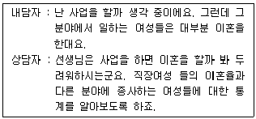
- 구체성의 결여 - 구체화시키기
- 파행적 의사소통 - 저항에 다시 초점 맞추기
- 강박적 사고 - RET 기법
- 원인과 결과 착오 - 논리적 분석
(정답률: 78%)
8. 다음은 내담자의 무엇을 사정하기 위한 것인가?
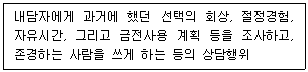
- 내담자의 동기
- 내담자의 생애역할
- 내담자의 가치
- 내담자의 흥미
(정답률: 65%)
9. 특성-요인 직업상담에서 상담사가 지켜야 할 상담원칙으로 틀린 것은?
- 내담자에게 강의하려 하거나 거만한 자세로 말하지 않는다.
- 전문적인 어휘를 사용하고, 상담 초기에는 내담자에게 제공하는 정보를 비교적 큰 범위로 확대한다.
- 어떤 정보나 해답을 제공하기 전에 내담자가 정말로 그것을 알고 싶어 하는지 확인한다.
- 상담사는 자신이 내담자가 지니고 있는 여러 가지 태도를 제대로 파악하고 있는지 확인한다.
(정답률: 84%)
10. 상담과정의 본질과 제한조건 및 목적에 대하여 상담자가 정의를 내려주는 것은?
- 촉진화
- 관계형성
- 문제해결
- 구조화
(정답률: 82%)
11. 직업선택을 위한 마지막 과정인 선택할 직업에 대한 평가과정 중 요스트(Yost)가 제시한 방법이 아닌 것은?
- 원하는 성과연습
- 확률추정연습
- 대차대조표연습
- 동기추정연습
(정답률: 56%)
12. 수퍼(Super)의 전생애 발달과업의 순환 및 재순환에서 '새로운 과업 찾기'가 중요한 시기는 언제인가?
- 청소년기(14~24세)
- 성인초기(25~45세)
- 성인중기(46~65세)
- 성인후기(65세 이상)
(정답률: 59%)
13. 인간중심 진로상담의 개념에 관한 설명으로 옳지 않은 것은?
- 일의 세계 및 자아와 관련된 정보의 부족에 관심을 둔다.
- 자아 및 직업과 관련된 정보를 거부하거나 왜곡하는 문제를 찾고자 한다.
- 진로선택과 관련된 내담자의 불안을 줄이고 자기의 책임을 수용하도록 한다.
- 상담자의 객관적 이해를 내담자에 대한 자아 명료화의 근거로 삼는다.
(정답률: 61%)
14. 보딘(Bordin)의 정신역동적 직업상담에서 사용하는 기법이 아닌 것은?
- 명료화
- 비교
- 소망-방어 체계
- 준지시적 반응 범주화
(정답률: 79%)
15. 포괄적 직업상담에서 초기, 중간, 마지막 단계 중 중간 단계에서 주로 사용하는 접근법은?
- 발달적 접근법
- 정신역동적 접근법
- 내담자 중심 접근법
- 행동주의적 접근법
(정답률: 55%)
16. 직업상담에서 직업카드분류법은 무엇을 알아보기 위한 것인가?
- 직업선택 시 사용 가능한 기술
- 가족 내 서열 및 직업가계도
- 직업세계와 고용시장의 변화
- 직업흥미의 탐색
(정답률: 81%)
17. 상담이론과 그와 관련된 상담기법을 바르게 짝지은 것은?
- 정신분석적 상담 - 인지적 재구성
- 행동치료 - 저항의 해석
- 인지적 상담 - 이완기법
- 형태치료 - 역할연기, 감정에 머무르기
(정답률: 58%)
18. 아들러(Adler) 이론의 주요 개념인 초기 기억에 관한 설명을 모두 고른 것은?
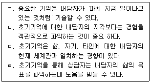
- ㄱ, ㄴ
- ㄴ, ㄷ
- ㄱ, ㄷ, ㄹ
- ㄴ, ㄷ, ㄹ
(정답률: 70%)
19. 행동수정에서 상담자의 역할은?
- 내담자가 사랑하고, 일하고, 노는 자유를 획득하도록 돕는다.
- 내담자의 가족 구성에 대한 정보를 수집 한다.
- 내담자의 주관적 세계를 이해하여 새로운 이해나 선택을 할 수 있도록 돕는다.
- 내담자의 상황적 단서와 문제행동, 그 결과에 대한 정보를 얻기 위하여 노력한다.
(정답률: 63%)
20. 직업상담사의 윤리강령으로 옳지 않은 것은?
- 직업상담사는 개인이나 사회에 임박한 위험이 있더라도 개인정보의 보호를 위하여 내담자의 정보를 누설하지 말아야 한다.
- 직업상담사는 내담자에 대한 정보를 교육장면 이나 연구에 사용할 경우에는 내담자와 합의 후 사용하되 정보가 노출되지 않도록 해야 한다.
- 직업상담사는 소속 기관과의 갈등이 있을 경우 내담자의 복지를 우선적으로 고려해야 한다.
- 직업상담사는 상담관계의 형식, 방법, 목적을 설정하고 그 결과에 대하여 내담자와 협의 해야 한다.
(정답률: 82%)
2과목: 직업심리학
21. 다음의 내용을 주장한 학자는?
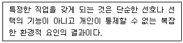
- Krumboltz
- Dawis
- Gelatt
- Peterson
(정답률: 71%)
22. 다음 중 전직을 예방하기 위해 퇴직의사 보유자에게 실시하는 직업상담 프로그램으로 가장 적합한 것은?
- 직업복귀 프로그램
- 실업충격완화 프로그램
- 조기퇴직계획 프로그램
- 직업적응 프로그램
(정답률: 64%)
23. Super의 직업발달이론에 대한 중심 개념으로 볼 수 없는 것은?
- 개인은 각기 적합한 직업군의 적격성이 있다.
- 직업발달과정은 본질적으로 자아개념의 발달 보완과정이다.
- 개인의 직업기호와 생애는 자아실현의 과정으로 현실과 타협하지 않는 활동과정이다.
- 직업과 인생의 만족은 자기의 능력, 흥미, 성격특성 및 가치가 충분히 실현되는 정도이다.
(정답률: 73%)
24. 다음은 어떤 타당도에 관한 설명인가?
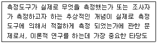
- 내용타당도(content validity)
- 개념타당도(construct validity)
- 공인타당도(concurrent validity)
- 예언타당도(predictive validity)
(정답률: 45%)
25. 신뢰도 추정에 관한 설명으로 옳지 않은 것은?
- 속도검사의 경우 기우양분법으로 반분신뢰도를 추정하면 신뢰도 계수가 과대 추정되는 경향이 있다.
- 신뢰도 추정에 영향을 미치는 요인은 상관계수에 영향을 미치는 요인과 유사하다.
- 신뢰도 추정에 영향을 미치는 요인 중 가장 중요한 요인은 표본의 동질성이다.
- 정서반응과 같은 불안정한 심리적 특성의 신뢰도를 정확히 추정하기 위해서는 검사-재검사의 기간을 충분히 두어야 한다.
(정답률: 61%)
26. 신입사원이 조직에 쉽게 적응하도록 상사가 후견인이 되어 도와주는 경력개발프로그램은?
- 종업원지원 시스템
- 멘토십 시스템
- 경력지원 시스템
- 조기발탁 시스템
(정답률: 84%)
27. 성인용 웩슬러 지능검사(K-WAIS-IV)의 처리속도지수에 포함되지 않는 소검사는?
- 동형찾기
- 퍼즐
- 기호쓰기
- 지우기
(정답률: 47%)
28. 직무분석 자료의 특성과 가장 거리가 먼 것은?
- 최신의 정보를 반영해야 한다.
- 논리적으로 체계화되어야 한다.
- 진로상담 목적으로만 사용되어야 한다.
- 가공하지 않은 원상태의 정보이어야 한다.
(정답률: 65%)
29. 특정 집단의 점수분포에서 한 개인의 상대적 위치를 나타내는 점수는?
- 표준 점수
- 표준 등급
- 백분위 점수
- 규준 점수
(정답률: 68%)
30. Holland의 성격유형 중 구조화된 환경을 선호하고, 질서정연하고 체계적인 자료정리를 좋아하는 것은?
- 실제형
- 탐구형
- 사회형
- 관습형
(정답률: 78%)
31. 개인의 진로발달 과정에서 초기의 가정환경이 그 후의 직업선택에 중요한 영향을 미친다고 보는 이론은?
- 파슨스(Parsons)의 특성이론
- 갤라트(Gelatt)의 의사결정이론
- 로(Roe)의 욕구이론
- 수퍼(Super)의 발달이론
(정답률: 59%)
32. 셀리에(Selye)의 스트레스에서의 일반적응 증후군에 관한 설명으로 옳지 않은 것은?
- 스트레스의 결과가 신체 부위에 영향을 준다는 뜻에서 일반적이라 명명했다.
- 스트레스의 원인으로부터 신체가 대처하도록 한다는 의미에서 적응이라 명명했다.
- 경계단계는 정신적 혹은 육체적 위험에 노출되었을 때 즉각적인 반응을 보이는 단계이다.
- 탈진단계에서 심장병을 잘 유발하는 성격의 B유형은 흥분을 가라앉히지 않는다.
(정답률: 74%)
33. 심리검사를 선택하고 해석하는 과정에 관한 설명으로 틀린 것은?
- 검사는 진행 중인 상담과정의 한 구성요소로만 보아야 한다.
- 검사는 내담자의 의사결정을 돕기 위한 정보를 얻는 하나의 도구이다.
- 검사는 내담자와 함께 협조해서 선택하는 것이 좋다.
- 검사의 결과는 가능한 한 내담자에게 제공해서는 안된다.
(정답률: 80%)
34. 윌리암슨(Williamson)이 제시한 상담의 과정을 바르게 나열한 것은?
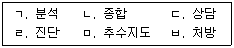
- ㄱ → ㄴ → ㄹ → ㅂ → ㄷ → ㅁ
- ㄱ → ㄴ → ㄹ → ㄷ → ㅁ → ㅂ
- ㄱ → ㄹ → ㅂ → ㄷ → ㅁ → ㄴ
- ㄹ → ㅂ → ㄴ → ㄱ → ㄷ → ㅁ
(정답률: 73%)
35. 다음의 특성을 가진 직무분석기법은?
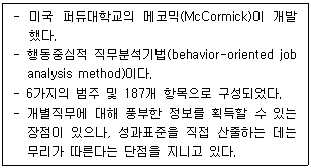
- CD 직무과제분석(JTA)
- 기능적 직무분석(FJA)
- 직위 분석 질문지(PAQ)
- 관리직 기술 질문지(MPDQ)
(정답률: 49%)
36. 직업적성검사(GATB)에서 사무지각적성(clerical perception)을 측정하기 위한 검사는?
- 표식검사
- 계수검사
- 명칭비교검사
- 평면도 판단검사
(정답률: 62%)
37. 스트레스와 직무수행 간의 관계에 관한 설명으로 옳은 것은?
- 스트레스가 많을수록 직무수행이 떨어지는 일차함수 관계이다.
- 어느 수준까지만 스트레스가 많을수록 직무수행이 떨어진다.
- 일정시점 이후에 스트레스 수준이 증가하면 수행실적은 오히려 감소하는 역U형 관계이다.
- 스트레스와 직무수행은 관계가 없다.
(정답률: 77%)
38. 스트레스에 대한 방어적 대처 중 직장 상사에게 야단맞은 사람이 부하직원이나 식구들에 게 트집을 잡아 화풀이를 하는 것은?
- 합리화(rationalization)
- 동일시(identification)
- 보상(compensation)
- 전위(displacement)
(정답률: 76%)
39. 다음 ( ) 안에 알맞은 것은?
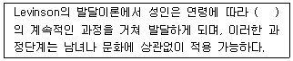
- 안정과 변화
- 주요 사건
- 과제와 도전
- 위기
(정답률: 48%)
40. Lofquist와 Dawis의 직업적응 이론에 나오는 4가지 성격양식 차원에 해당하지 않는 것은?
- 민첩성
- 역량
- 친화성
- 지구력
(정답률: 59%)
3과목: 직업정보론
41. 다음 중 국가기술자격 종목에 해당하지 않는 것은?
- 임상심리사 2급
- 컨벤션기획사 2급
- 그린전동자동차기사
- 자동차관리사 2급
(정답률: 54%)
42. 한국표준산업분류(제10차)의 분류목적에 해당하지 않는 것은?
- 기본적으로 산업활동 관련 통계 자료 수집, 제표, 분석 등을 위해서 활동 분류 및 범위를 제공하기 위한 것
- 산업 관련 통계자료 정확성, 비교성을 확보하기 위하여 모든 통계작성기관은 한국표준산업분류를 의무적으로 사용하도록 규정
- 일반 행정 및 산업정책 관련 다수 법령에서 적용대상 산업영역을 규정하는 기준으로 준용
- 취업알선을 위한 구인·구직안내 기준
(정답률: 61%)
43. 다음은 한국직업사전(2020) 직무기능 “사물” 항목 중 무엇에 관한 설명인가?
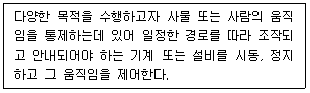
- 조작운전
- 정밀작업
- 제어조작
- 수동조작
(정답률: 53%)
44. 직업정보 분석 시 유의점으로 틀린 것은?
- 전문적인 시각에서 분석한다.
- 직업정보원과 제공원에 대해 제시한다.
- 동일한 정보에 대해서는 한 가지 측면으로만 분석한다.
- 원자료의 생산일, 자료표집방법, 대상 등을 검토해야 한다.
(정답률: 81%)
45. 인간이 복잡한 정보에 접근하게 되는 구조에 근거를 둔 이론으로 직업선택결정 단계를 전제단계, 계획단계, 인지부조화단계로 구분한 직업 결정모형은?
- 타이드만과 오하라(Tiedeman & O'Hara)의모형
- 힐튼(Hilton) 의 모형
- 브룸(Vroom)의 모형
- 수(Hsu)의 모형
(정답률: 46%)
46. 한국표준직업분류(제7차)의 개정 특징으로 틀린 것은?
- 전문 기술직의 직무영역 확장 등 지식 정보화 사회 변화상 반영
- 사회 서비스 일자리 직종 세분 및 신설
- 고용규모 대비 분류항목이 적은 사무 및 판매·서비스직 세분
- 자동화·기계화 진전에 따른 기능직 및 기계 조작직 직종 세분 및 신설
(정답률: 53%)
47. 다음은 국가기술자격 중 어떤 등급의 검정기준에 해당하는가?
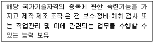
- 기능사
- 산업기사
- 기사
- 기능장
(정답률: 65%)
48. 한국표준산업분류(제10차) 분류정의가 틀린 것은?
- 산업은 유사한 성질을 갖는 산업활동에 주로 종사하는 생산단위의 집합이다.
- 각 생산단위가 노동, 자본, 원료 등 자원을 투입하여, 재화 또는 서비스를 생산 또는 제공하는 일련의 활동과정은 산업활동이다.
- 산업활동 범위에는 영리적, 비영리적 활동이 모두 포함되며, 가정 내 가사 활동도 포함 된다.
- 산업분류는 생산단위가 주로 수행하는 산업활동을 분류 기준과 원칙에 맞춰 그 유사성에 따라 체계적으로 유형화한 것이다.
(정답률: 79%)
49. 고용노동통계조사의 각 항목별 조사주기의 연결이 틀린 것은?
- 사업체 노동력 조사 : 연 1회
- 시도별 임금 및 근로시간 조사 : 연 1회
- 지역별 사업체 노동력 조사 : 연 2회
- 기업체 노동비용 조사 : 연 1회
(정답률: 38%)
50. 다음은 어떤 직업훈련지원제도에 관한 설명인가?
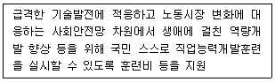
- 국가기간·전략산업직종 훈련
- 사업주 직업능력개발훈련
- 국민내일배움카드
- 일학습병행
(정답률: 76%)
51. 한국표준산업분류(제10차)의 산업분류 결정방법에 관한 설명으로 틀린 것은?
- 생산단위 산업활동은 그 생산단위가 수행하는 주된 산업 활동 종류에 따라 결정
- 계절에 따라 정기적으로 산업활동을 달리하는. 사업체의 경우엔 조사대상 기간 중 산출액이 많았던 활동에 의하여 분류
- 설립 중인 사업체는 개시하는 산업활동에 따라 결정
- 단일사업체 보조단위는 별도의 사업체로 처리
(정답률: 68%)
52. 평생학습계좌제(www.all.go.kr)에 관한 설명으로 틀린 것은?
- 개인의 다양한 학습경험을 온라인 학습이력관리시스템에 누적·관리 하여 체계적인 학습설계를 지원한다.
- 개인의 학습결과를 학력이나 자격인정과 연계하거나 고용정보로 활용할 수 있게 한다.
- 전 국민을 대상으로 실시하는 제도로서, 원하는 누구나 이용이 가능하다.
- 온라인으로 계좌개설이 가능하며 방문신청은 전국 고용센터에 방문하여 개설한다.
(정답률: 64%)
53. 워크넷에서 제공하는 채용정보 중 기업형태별 검색에 해당하지 않는 것은?
- 벤처기업
- 외국계기업
- 환경친화기업
- 일학습병행기업
(정답률: 59%)
54. 직업정보의 가공에 대한 설명으로 틀린 것은?
- 정보를 공유하는 방법을 강구하는 단계이다.
- 정보의 생명력을 측정하여 활용방법을 선정하고 이용자에게 동기를 부여할 수 있도록 구상한다.
- 정보를 제공하는 것은 긍정적인 입장에서 출발하여야 한다.
- 시각적 효과를 부가한다.
(정답률: 58%)
55. 워크넷(직업·진로)에서 '직업정보 찾기'의 하위 메뉴가 아닌 것은?
- 신직업·창직 찾기
- 업무수행능력별 찾기
- 통합 찾기(지식, 능력, 흥미)
- 지역별 찾기
(정답률: 64%)
56. 워크넷에서 제공하는 학과정보 중 자연계열의 “생명과학과”와 관련이 없는 학과는?
- 의생명과학과
- 해양생명과학과
- 분자생물학과
- 바이오산업공학과
(정답률: 40%)
57. 민간직업정보와 비교한 공공직업정보의 특성에 관한 설명과 가장 거리가 먼 것은?
- 필요한 시기에 최대한 활용되도록 한시적으로 신속하게 생산 및 운영된다.
- 광범위한 이용가능성에 따라 공공직업정보체계에 대한 직접적이며 객관적인 평가가 가능하다.
- 특정 분야 및 대상에 국한되지 않고 전체 산업 및 업종에 걸친 직종 등을 대상으로 한다.
- 직업별로 특정한 정보만을 강조하지 않고 보편적안 항목으로 이루어진 기초적인 직업정보체계로 구성되어 있다.
(정답률: 78%)
58. 한국표준직업분류(제7차) 개정 시 대분류 3 “사무 종사자”에 신설된 것은?
- 행정사
- 신용카드 모집인
- 로봇공학 기술자 및 연구원
- 문화 관광 및 숲·자연환경 해설사
(정답률: 59%)
59. Q-net(www.q-net.or.kr)에서 제공하는 국가기술자격 종목별 정보를 모두 고른 것은?
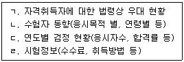
- ㄱ, ㄴ
- ㄷ, ㄹ
- ㄱ, ㄴ, ㄹ
- ㄱ, ㄴ, ㄷ, ㄹ
(정답률: 75%)
60. 직업정보의 일반적인 평가 기준과 가장 거리가 먼 것은?
- 어떤 목적으로 만든 것인가
- 얼마나 비싼 정보인가
- 누가 만든 것인가
- 언제 만들어진 것인가
(정답률: 81%)
4과목: 노동시장론
61. 노동조합에 관한 설명으로 옳은 것은?
- 노조부문과 비노조부문 간의 임금격차를 해소시킨다.
- 집단적 소리로서의 기능을 하여 비효율을 제거하고 생산성을 증진시킬 수 있다.
- 시장기능에 의해 결정된 임금수준을 반드시 수용한다.
- 노동조합의 임금수준은 일반적으로 비노조부문의 임금수준에 비해 낮게 책정되어 있다.
(정답률: 69%)
62. 1960년대 선진국에서 실업률과 물가상승률 간의 상충관계를 개선하고자 실시했던 정책은?
- 재정정책
- 금융정책
- 인력정책
- 소득정책
(정답률: 66%)
63. 경기침체로 실업자가 직장을 구하는 것이 더욱 어렵게 되어 구직활동을 단념함으로써 비경제활동인구가 늘어나고 경제활동인구가 감소하는 것은?
- 실망노동자효과
- 부가노동자효과
- 대기실업효과
- 추가실업효과
(정답률: 69%)
64. 한국 노동시장에서 인력난과 유휴인력이 공존하는 이유로 가장 적합한 것은?
- 근로자의 학력격차의 확대
- 외국인고용허가제 도입
- 기업규모별 임금격차의 확대
- 미숙련노동력의 무제한적 공급
(정답률: 58%)
65. 노사관계의 주체를 사용자 및 단체, 노동자 및 단체, 정부로 규정하고 이들 간의 관계는 기술, 시장 또는 예산상의 제약, 권력구조에 의해 결정된다는 노사관계이론은?
- 시스템이론
- 수렴이론
- 분산이론
- 단체교섭이론
(정답률: 58%)
66. 다음 중 내부노동시장의 특징에 관한 설명으로 옳은 것은?
- 신규채용이나 복직 그리고 능력 있는 자의 초빙 시에만 외부노동시장과 연결된다.
- 승진이나 직무배치 그리고 임금 등은 외부노동시장과 연계하여 결정된다.
- 임금은 근로자의 단기적 생산성과 관련된다.
- 내부와 외부노동시장 간에 임금격차가 없다.
(정답률: 61%)
67. 개인이 노동시장에서의 노동공급을 포기하는 경우에 관한 설명으로 틀린 것은?
- 개인의 여가-소득 간의 무차별곡선이 수평에 가까운 경우이다.
- 개인의 여가-소득 갑의 무차별곡선과 예산제약선 간의 접점이 존재하지 않거나, X축 코너(comer)점에서만 접점이 이루어질 경우이다.
- 일정 수준의 효용을 유지하기 위해 1시간 추가적으로 더 일하는 것을 보상하는데 요구되는 소득이 시장임금률보다 더 큰 경우이다.
- 소득에 비해 여가의 효용이 매우 큰 경우이다.
(정답률: 40%)
68. 노사 간에 공동결정(co-determination)이 라는 광범위한 합의 관행이 존재하고 있는 국가는?
- 영국
- 프랑스
- 미국
- 독일
(정답률: 62%)
69. 다음 중 최저임금제도의 기대효과가 아닌 것은?
- 소득분배 개선
- 기업 간 공정경쟁 유도
- 고용 확대
- 산업구조의 고도화
(정답률: 60%)
70. 다음 중 노동공급의 감소로 발생되는 현상은?
- 사용자의 경쟁심화로 임금수준의 하락을 초래한다.
- 고용수준의 증가를 가져온다.
- 임금수준의 상승을 초래한다.
- 일시적인 초과 노동공급현상을 유발한다.
(정답률: 66%)
71. 노동조합 조직의 유지 및 확대에 유리한 순서대로 숍제도를 나열한 것은?
- 클로즈드솝＞유니온숍＞오픈숍
- 유니온숍＞클로즈드숍＞오픈숍
- 오픈습＞유니온숍＞클로즈드숍
- 오픈습＞클로즈드숍＞유니온숍
(정답률: 67%)
72. 통상임금과 평균임금에 관한 설명으로 틀린 것은?
- 통상임금에는 기본급, 직무관련 직책, 직급, 직무수당을 포함한다.
- 초과급여, 특별급여 등은 통상임금 산정에서 제외된다.
- 평균임금은 고용기간 중에서 근로자가 지급받고 있던 평균적인 임금수준을 말한다.
- 평균임금은 연장근로, 야간근로, 휴일근로 등의 산출 기준 임금이다.
(정답률: 54%)
73. 정보의 유통장애와 가장 관련이 높은 실업은?
- 마찰적 실업
- 경기적 실업
- 구조적 실업
- 잠재적 실업
(정답률: 70%)
74. 1998~1999년의 경제위기 기간에 나타난 우리노동시장의 특징과 가장 거리가 먼 것은?
- 해고분쟁의 증가
- 외국인 노동자 대량유입
- 근로자의 평균근속기간 감소
- 임시직·일용직 고용비중의 증가
(정답률: 69%)
75. 임금상승이 한 개인의 여가와 노동시간에 미치는 효과 중 소득효과가 대체효과보다 클 경우 나타나는 것은?
- 여가시간은 감소하지만 노동시간이 증가한다.
- 여가시간과 노동시간이 함께 증가한다.
- 여가시간과 노동시간이 함께 감소한다.
- 여가시간은 증가하지만 노동시간은 감소한다.
(정답률: 57%)
76. 근로자의 근속연수에 따라 임금을 결정하는 임금체계는?
- 연공급
- 직무급
- 직능급
- 성과급
(정답률: 77%)
77. 노동조합으로 인해 비노조부문의 임금이 하락하고 있다면 이는 어떤 경우인가?
- 이전효과(spillover effect)만 나타나는 경우
- 위협효과(threat effect)만 나타나는 경우
- 대기실업효과만 나타나는 경우
- 비노동조합부문에서 노동수요곡선을 좌측으로 이동하는 효과가 나타나는 경우
(정답률: 57%)
78. 임금이 10000원에서 12000원으로 증가할 때 고용량이 120명에서 108명으로 감소한. 경우 노동수요의 탄력성은?
- 0.06
- 0.5
- 1.0
- 2.0
(정답률: 51%)
79. K회사는 4번째 직원을 채용할 때 모든 근로자의 시간당 임금을 8천 원에서 9천 원으로 인상할 것이다. 만약 4번째 직원의 시간당 한계수입생산이 1만 원이라면 K기업이 4번째 직원을 새로 고용함에 따라 얻을 수 있는 시간당 이윤은?
- 1천 원 증가
- 2천 원 증가
- 1천 원 감소
- 2천 원 감소
(정답률: 43%)
80. 다음 중 임금수준의 결정원칙이 아닌 것은?
- 사회적 균형의 원칙
- 생계비 보장의 원칙
- 소비욕구 반영의 원칙
- 기업 지불 능력의 원칙
(정답률: 59%)
5과목: 노동관계법규
81. 직업안정법령상 근로자의 모집에 관한 설명으로 틀린 것은?
- 누구든지 국외에 취업할 근로자를 모집한 경우에는 고용노동부장관에게 신고하여야 한다.
- 고용노동부장관은 건전한 모집질서를 확립하기 위하여 필요하다고 인정하는 경우에는 근로자 모집방법 등의 개선을 권고할 수 있다.
- 고용노동부장관은 근로자의 모집을 원활하게 하기 위하여 필요하다고 인정할 때에는 국외취업을 희망하는 근로자를 미리 등록하게 할 수 있다.
- 근로자를 모집하려는 자가 응모자로부터 그 모집과 관련하여 금품을 받은 경우 7년 이하의 징역 또는 7천만 원 이하의 벌금에 처한다.
(정답률: 54%)
82. 고용보험법령상 취업촉진 수당에 해당하지 않는 것은?
- 구직급여
- 조기재취업 수당
- 광역 구직활동비
- 직업능력개발 수당
(정답률: 58%)
83. 헌법상 근로의 권리로서 명시되어 있지 않은 것은?
- 최저임금제 시행
- 여성근로자의 특별보호
- 연소근로자의 특별보호
- 장애인근로자의 특별보호
(정답률: 53%)
84. 남녀고용평등 및 일·가정 양립 지원에 관한 법령상 육아기 근로시간 단축에 관한 설명이다. ( )에 들어갈 내용으로 옳은 것은?
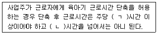
- ㄱ : 10, ㄴ : 15
- ㄱ : 10, ㄴ : 20
- ㄱ : 15, ㄴ : 30
- ㄱ : 15, ㄴ : 35
(정답률: 54%)
85. 개인정보 보호법령에 관한 설명으로 틀린 것은?
- “정보주체”란 처리되는 정보에 의하여 알아볼 수 있는 사람으로서 그 정보의 주체가 되는 사람을 말한다.
- 개인정보처리자는 개인정보의 처리 목적에 필요한 범위에서 개인정보의 정확성, 완전성 및 최신성이 보장되도록 하여야 한다.
- 개인정보 보호에 관한 사무를 독립적으로 수행하기 위하여 국무총리 소속으로 개인정보 보호위원회를 둔다.
- 위원의 임기는 2년으로 하되, 연임할 수 없다.
(정답률: 58%)
86. 근로기준법령상 이행강제금에 관한 설명으로 틀린 것은?(2021년 11월 19일 시행된 규정 적용됨)
- 노동위원회는 구제명령을 받은 후 이행기한까지 구제명령을 이행하지 아니한 사용자에게 3천만원 이하의 이행강제금을 부과한다.
- 노동위원회는 이행강제금을 부과하기 30일 전까지 이행강제금을 부 과·징수한다는 뜻을 사용자에게 미리 문서로써 알려 주어야 한다.
- 근로자는 구제명령을 받은 사용자가 이행기한까지 구제명령을 이행하지 아니하면 이행기한이 지난 때부터 30일 이내에 그 사실을 노동위원회에 알려줄 수 있다.
- 노동위원회는 이행강제금 납부의무자가 납부기한까지 이행강제금을 내지 아니하면 기간을 정하여 독촉을 하고 지정된 기간에 이행강제금을 내지 아니하면 국세 체납처분의 예에 따라 징수할 수 있다.
(정답률: 52%)
87. 고용정책 기본법령상 고용정책기본계획에 포함되는 내용으로 명시되지 않은 것은?
- 고용동향과 인력의 수급 전망에 관한 사항
- 고용에 관한 중장기 정책목표 및 방향
- 인력의 수급 동향 및 전망을 반영한 직업능력개발훈련의 수급에 관한 사항
- 인력의 수요와 공급에 영향을 미치는 산업정책 등의 동향에 관한 사항
(정답률: 42%)
88. 근로자직업능력개발법령상 실시방법에 따라 구분한 직업능력개발훈련에 해당하지 않는 것은?
- 집체훈련
- 향상훈련
- 현장훈련
- 원격훈련
(정답률: 61%)
89. 고용보험법령상 구직급여의 수급자격이 인정되기 위해서는 이직일 이전 18개월의 기준기간 중에 피보험 단위기간이 통산하여 몇 일 이상 되어야 하는가?
- 60일
- 90일
- 120일
- 180일
(정답률: 65%)
90. 고용정책기본법령상 고용재난지역에 관한 설명으로 틀린 것은?
- 고용재난지역으로 선포할 것을 대통령에게 건의할 수 있는 자는 기획재정부장관이다.
- 고용재난지역의 선포를 건의받은 대통령은 국무회의 심의를 거쳐 해당 지역을 고용 재난지역으로 선포할 수 있다.
- 고용재난지역으로 선포하는 경우 정부는 행정상·재정상·금융상의 특별지원이 포함된 종합대책을 수립·시행할 수 있다.
- 고용재난조사단은 단장 1명을 포함하여 15명 이하의 단원으로 구성한다.
(정답률: 56%)
91. 근로자 직업능력 개발 법령상 직업능력개발훈련에 관한 설명으로 옳은 것은?
- 직업능력개발훈련은 18세 미만인 자에게는 실시할 수 없다.
- 직업능력개발훈련의 대상에는 취업할 의사가 있는 사람뿐만 아니라 사업주에게 고용된 사람도 포함된다.
- 직업능력개발훈련 시설의 장은 직업능력개발훈련과 관련된 기술 등에 관한 표준을 정할 수 있다.
- 산업재해보상보험법을 적용받는 사람도 재해 위로금을 받을 수 있다.
(정답률: 55%)
92. 고용보험법령상 고용안정·직업능력개발 사업의 내용에 해당하지 않는 것은?
- 조기재취업 수당 지원
- 고용창출의 지원
- 지역고용의 촉진
- 임금피크제 지원금의 지급
(정답률: 38%)
93. 근로기준법령상 용어의 정의에 관한 설명으로 틀린 것은?
- “근로”란 정신노동과 육체노동을 말한다.
- “사용자”란 사업주 또는 사업 경영 담당자, 그 밖에 근로자에 관한 사항에 대하여 사업주를 위하여 행위하는 자를 말한다.
- “통상임금”이란 이를 산정하여야 할 사유가 발생한 날 이전 3개월 동안에 그 근로자에게 지급된 임금의 총액을 그 기간의 총일수로 나눈 금액을 말한다.
- “단시간근로자”란 1주 동안의 소정근로시간이 그 사업장에서 같은 종류의 업무에 종사 하는 통상 근로자의 1주 동안의 소정근로시간에 비하여 짧은 근로자를 말한다.
(정답률: 62%)
94. 남녀고용평등과 일·가정 양립 지원에 관한 법령상 과태료를 부과하는 위반행위는?
- 근로자의 교육·배치 및 승진에서 남녀를 차별한 경우
- 성희롱 예방 교육을 하지 아니한 경우
- 동일한 사업 내의 동일 가치의 노동에 대하여 동일한 임금을 지급하지 아니한 경우
- 육아기 근로시간 단축을 이유로 해당 근로자에 대하여 해고나 그 밖의 불리한 처우를 한 경우
(정답률: 51%)
95. 근로기준법령상 근로계약에 관한 설명으로 틀린 것은?
- 근로기준법에서 정하는 기준에 미치지 못하는 근로조건을 정한 근로계약은 그 부분에 한하여 무효로 한다.
- 사용자는 근로계약 불이행에 대한 위약금 또는 손해배상액을 예정하는 계약을 체결할 수 있다.
- 사용자는 근로계약을 체결할 때에 근로자에게 임금, 소정근로시간, 휴일, 연차 유급휴가 등의 사항을 명시하여야 한다.
- 명시된 근로조건이 사실과 다를 경우에 근로자는 근로조건 위반을 이유로 손해의 배상을 청구할 수 있으며 즉시 근로계약을 해제할 수 있다.
(정답률: 64%)
96. 남녀고용평등과 일·가정 양립 지원에 관한 법령상 직장 내 성희롱의 금지 및 예방에 관한 설명으로 틀린 것은?
- 사업주, 상급자 또는 근로자는 직장 내 성희롱을 하여서는 아니 된다.
- 사업주는 성희롱 예방 교육을 고용노동부장관이 지정하는 기관에 위탁하여 실시할 수 있다.
- 누구든지 직장 내 성희롱 발생 사실을 알게된 경우 그 사실을 해당 사업주에게 신고할 수 있다.
- 사업주는 직장 내 성희롱 예방 교육을 연 2회 이상 하여야 한다.
(정답률: 70%)
97. 근로자퇴직급여 보장법에 관한 설명으로 틀린 것은?
- 이 법은 상시 5명 미만의 근로자를 사용하는 사업장에는 적용하지 아니 한다.
- 퇴직금제도를 설정하려는 사용자는 계속근로기간 1년에 대하여 30일분 이상의 평균임금을 퇴직금으로 퇴직 근로자에게 지급할 수 있는 제도를 설정하여야 한다.
- 퇴직금을 받을 권리는 3년간 행사하지 아니하면 시효로 인하여 소멸한다.
- 확정급여형퇴직연금제도란 근로자가 받을 급여의 수준이 사전에 결정되어 있는 퇴직연금제도를 말한다.
(정답률: 61%)
98. 직업안정법령상 근로자공급사업에 관한 설명으로 틀린 것은?
- 근로자공급사업 연장허가의 유효기간은 연장전 허가의 유효기간이 끝나는 날부터 5년으로 한다.
- 누구든지 고용노동부장관의 허가를 받지 아니하고는 근로자공급사업을 하지 못한다.
- 연예인을 대상으로 하는 국외 근로자공급 사업의 허가를 받을 수 있는 자는 민법상 비영리법인으로 한다.
- 국내 근로자공급사업 허가를 받을 수 있는 자는 「노동조합 및 노동관계조정법」에 따른 노동조합이다.
(정답률: 40%)
99. 파견근로자보호 등에 관한 법령에 대한 설명으로 틀린 것은?
- 근로자파견사업의 허가의 유효기간은 3년으로 한다.
- 파견사업주는 그가 고용한 근로자 중 파견근로자로 고용하지 아니한 자를 근로자파견의 대상으로 하려는 경우에는 고용노동부장관의 승인을 받아야 한다.
- 파견사업주는 쟁의행위 중인 사업장에 그 쟁의행위로 중단된 업무의 수행을 위하여 근로자를 파견하여서는 아니 된다.
- 파견사업주는 근로자파견을 할 경우에는 파견근로자의 성명·성별·연령·학력, 자격 기타 직업능력에 관한 사항을 사용사업주에게 통지하여야 한다.
(정답률: 52%)
100. 고용상 연령차별금지 및 고령자고용촉진에 관한 법령상 운수업에서의 고령자 기준 고용률은?
- 그 사업장의 상시 근로자 수의 100분의 2
- 그 사업장의 상시 근로자 수의 100분의 3
- 그 사업장의 상시 근로자 수의 100분의 6
- 그 사업장의 상시 근로자 수의 100분의 10
(정답률: 66%)